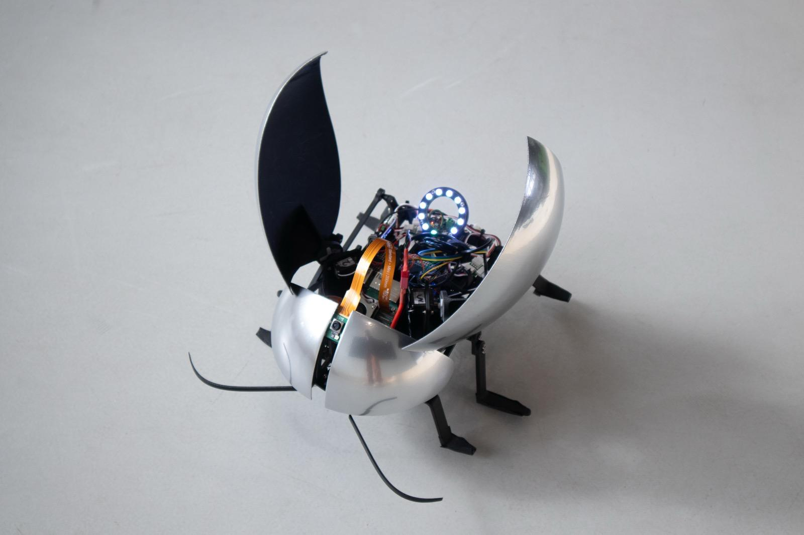
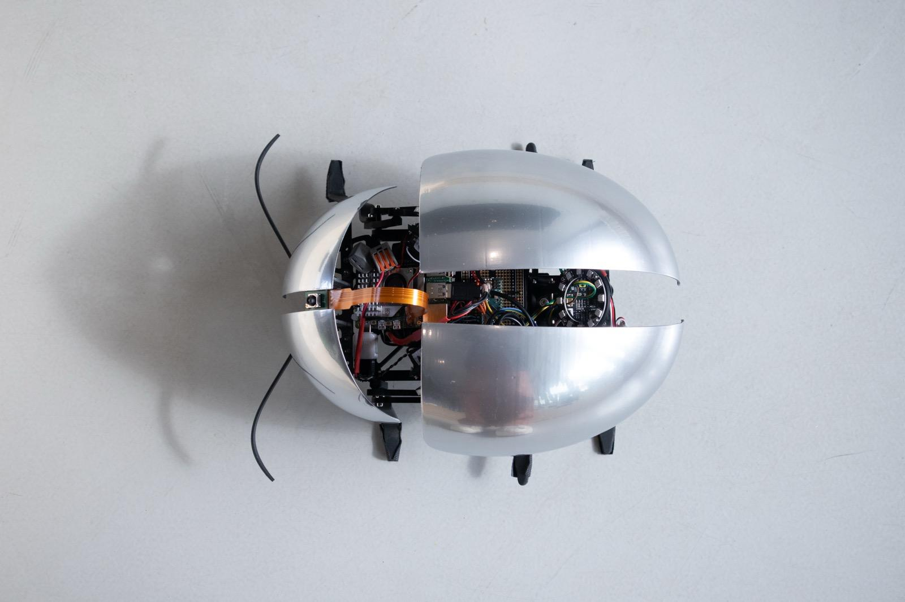

Robotics / Bio-Inspired Design
FlashBeetle
A bio-inspired robotic beetle that explores how people interact with an intentionally antisocial robot.

FlashBeetle Flashing
Project Overview
FlashBeetle is an artistic robotics project that explores how people respond to an actively antisocial robot. Rather than seeking interaction, it prefers to be left alone and makes its discomfort known when people persist.

FlashBeetle Topdown View
Design
I focused on the software architecture and electrical engineering. The system uses a Raspberry Pi 5, Pi Camera, Arduino Micro, NeoPixel LED ring, servos, Hall-effect sensors, and limit switches for the antenna mechanisms.
The Raspberry Pi runs Ubuntu 24.04 with ROS 2 Jazzy and hosts a YOLO-based facial recognition system. A finite-state machine manages the robot's primary behavior and control logic. A custom ROS 2 serial communication node connects the Raspberry Pi to the Arduino, which serves as the main interface for the robot's peripheral hardware.
FlashBeetle demonstration
Demonstration
FlashBeetle was exhibited at Highlight Delft and Maker Faire Delft, where it generated strong interest and gave visitors a chance to experience its deliberately antisocial behavior firsthand.
These demonstrations led to interesting conversations about how people interpret and respond to robotic behavior. Children were often especially eager to pet FlashBeetle, only to be startled when it reacted defensively.